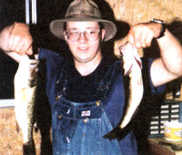
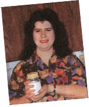
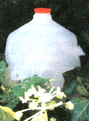

Country Lore
Better cleaning, and an explosive way to deal with fire ants.
My father-in-law and I put in a garden every year, but as anyone living in Kansas knows, our summers can get pretty hot. We had a drought last summer and had trouble conserving water and watering the garden. So we went to the hardware store and bought some PVC pipe which we hooked up to the drain on the washing machine. While washing the clothes, I also irrigated the garden so that all the crops could profit from this rig. The soap (which is biodegradable) also helped keep the bugs off the plants.
-Chad Ratliff
Fort Scott, KS
Homemade Stain Remover
To clean tough household stains, store this mix for future use in a large glass jar.
1/2 cup baking soda
1/2 cup powdered detergent
1/4 cup salt
-Amy Ceader
Danville, IL
Insider Garden Galoshes
I save the bags that my newspaper is delivered in. Whenever I go out to work on "my little acre" I slip a pair of these little bags on over my socks, then put on my work shoes. This keeps both my feet and socks clean when I'm finished with a day's gardening and yard work.
-L. B. Felton
Chesapeake, VA
Homemade Play Dough & Paints
Here is a recipe for play dough for parents or caregivers who don't wish to pay the ridiculously high price for such a product. I have also included a cheap, fun recipe for finger paints.
Play Dough:
2 cups of fl our
1 cup of salt
2 cups of water
1/4 cup of oil
1 tablespoon of cream of tartar
1 package (small) of Kool-Aid or flavored drink crystals and corresponding food coloring.
Mix all ingredients over medium-high heat until they are dough-like. Remember to stir constantly throughout the process. Add drink crystals and food coloring until you get the color you want. Knead and store in an airtight container. The drink crystals will give the dough a delightful smell (of the flavor) as well as color. It will keep for about one to two weeks if you store it in an airtight container when you're not playing with it.
Soap Flake Finger Paints:
2 cups of soap flakes (not powder)
water
food coloring
In a bowl gradually add water to soap flakes while beating with a rotary or electric mixer. The soap should be the consistency of beaten egg whites with soft peaks. Add food coloring to make desired color.
If anyone is interested in play dough recipes or fun, safe activities for kids, you can E-mail me.
-Selena Simonoff
simonf@soonet.ca
Milk Jug Fly Trap
Trap flies and bees without pesticides by using recycled materials to create a lure. You'll need three plastic milk jugs or similar containers. Using sharp scissors, cut the handles off two jugs. You'll have an elbow-shaped tube; cut the long leg of each tube diagonally into a slant so you can place the tubes. Using a utility knife, cut one vertical slit on each of two sides of the jug, about two-thirds of the way up. Make the slits just large enough to accommodate the tubes. Cut a horizontal line through the center of the vertical slits. Take the long leg of the tubes with the elbows pointed up and force them part way into these openings.
Bait the trap with sugary juice, filling about one-third of the jug. Add a protein bait-cooked egg, chicken bones, or meat-into the inner portion of the tube.
Be sure to replace the cap on the jug and place it in an area where the pests have been congregating. Hang the jug up by the handle to keep out of reach of children. Yellow jackets enter the trap, but their natural instincts cause them to fly up. The tube structure is too difficult for them to maneuver, and they quickly drown in the juice at the bottom of the jug.
-Amy Fiorilla
Milltown, NJ
Beachcomber's Compost
The next time you head out to the beach, bring one recyclable trash bag to clean up after yourself and another to collect goodies for your compost heap. Seaweed is one of the best additives I can think of to boost the slow simmer of a heap, not to mention a mineral boost to the black gold you'll be harvesting. The broken bits of crab shell you almost always come across can be crushed and added to the heap as well.
- S. A. Daynard
Hudson, NH
Snaky Scarecrow
One of the simplest methods I've found in keeping small garden "thieves" from sampling my vegetables is to lay a few segments of an old garden hose (six to eight inches long) here and there among the beds. If you feel like being creative and have the time, you could paint a few stripes on them. The animals apparently mistake the hose for snakes and stay clear. I've always had great luck with this and end up each season with more than enough vegetables to share with my good friends and neighbors.
- S. A. Lennon
Tewksbury, MA
Exploding Fire Ants
I just thought you'd love to know how we get rid of some of the most pesky insects known to man, but first let me say that I love your "Country Lore" section and I feel that it gives many people inexpensive, down-to-earth solutions. Here's mine. During the summer, fire ants huddle up around the porch and cause a general nuisance. Well, down here on Tobacco Road, we just sprinkle a handful of grits around the densely populated ant holes or areas where ants are the most troublesome in our yard. The grits expand in their stomachs, and soon they ...well...explode. I know it sounds barbaric, but it works.
-Alice Davis
Goldsboro, NC
Bright Yellow Clothespins
I use a good clothesline to dry my clothes. Out here in the country, though, it can be difficult to find clothespins that drop onto the vegetation underneath my clothesline. I use the one-piece wooden ones. (They're strongest.) They blend right into the vegetation. I solved that problem years ago by spray painting them bright yellow.
- Joseph Kaye
Phenix, VA
Lemon Skunk-Odor Remover
To get skunk odor out of clothes, wash clothes in the washing machine with laundry detergent and a large bottle of lemon juice.
To keep new clothes from fading so quickly, wash them in the washing machine with laundry detergent and salt.
-JoAnn Lawson
Upper Sandusky, OH
|
 Milk Jug Fly Trap |
 |
 |
|
|
|
|